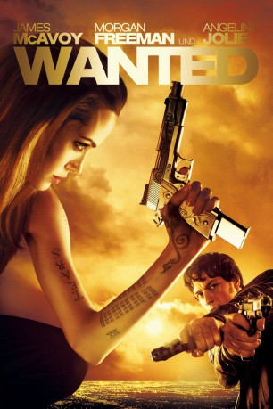
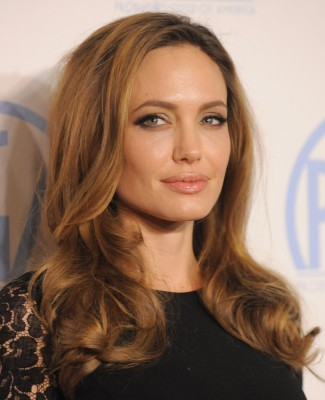
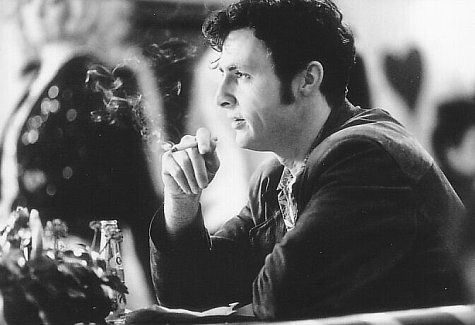

#305 Wanted
Auszeichnungen: für 2 Oscars nominiert
 
 IMDB-Wertung: 6.7 / 10
IMDB-Wertung: 6.7 / 10  Metascore: 64
Metascore: 64 
Wesley Gibson ist ein langweiliger Durchschnittstyp, der gute Gründe hat, sein Leben zu hassen: seine Chefin schikaniert ihn pausenlos und seine Freundin schläft mit seinem besten Freund. Doch dann trifft er die aufregende Fox, gerät mitten in eine Schießerei und erfährt, dass sein verschollener Vater gerade erst brutal ermordet wurde. Wes lernt die Bruderschaft kennen, einen mächtigen Geheimbund, der die Geschicke der Menschheit lenkt. Das frühere Weichei entwickelt durch Fox’ knallharte Ausbildung blitzschnelle Reflexe und übermenschliche Geschicklichkeit. Schließlich tritt Wes in die Fußstapfen seines Vaters, um Rache zu nehmen. Doch auch die Bruderschaft hat eine dunkle Seite und Wes muss entscheiden, wer eigentlich über sein Leben bestimmen soll …
Jahr: 2008
Dauer: 110 Minuten
FSK: 18
Land: USA Studio: Universal PicturesTonspuren: DTS - ,
Untertitel: Deutsch,
Auflösung: 720p (1280×544) Größe: 4904 MB
Genre: Action, Krimi, Fantasy, Thriller
Regisseur: Timur Bekmambetov
Drehbuch: Michael Brandt, Derek Haas, Chris Morgan, Michael Brandt, Derek Haas
Soundtrack: Danny Elfman
Darsteller:
 James McAvoy als Wesley
James McAvoy als Wesley Morgan Freeman als Sloan
Morgan Freeman als Sloan-  Angelina Jolie als Fox
 Terence Stamp als Pekwarsky
Terence Stamp als Pekwarsky Thomas Kretschmann als Cross
Thomas Kretschmann als Cross Common als The Gunsmith
Common als The Gunsmith- Kristen Hager als Cathy
 Marc Warren als The Repairman
Marc Warren als The Repairman-  David O'Hara als Mr. X
 Konstantin Khabenskiy als The Exterminator
Konstantin Khabenskiy als The Exterminator Chris Pratt als Barry
Chris Pratt als Barry Lorna Scott als Janice
Lorna Scott als Janice- Sophiya Haque als Puja
 Brian Caspe als The Pharmacist
Brian Caspe als The Pharmacist Mark O'Neal als Co-Worker
Mark O'Neal als Co-Worker- Bridget McManus als Check-Out Girl
- Brad Calcaterra als Assassin Max Petridge , uncredited
- Julia Copeland als Driver , uncredited
- Claudia DiBiccari als Pedestrian , uncredited
 Michael Jeremiah als Weaver , uncredited
Michael Jeremiah als Weaver , uncredited- Eliyas Qureshi als Weaver Assassin , uncredited
- Scarlett Sperduto als Young Fox , uncredited
- Giota Trakas als Store customer , uncredited
- Mike Whyte als Businessman , uncredited
- Bernadett Belinda York als Girl on Sidewalk , uncredited
- Dato Bakhtadze als The Butcher
- Daniel Boughton als Mini-Mart Customer / Pedestrian , uncredited
- Sharlene Grover als Hotel Guest , uncredited
- John Joseph MacDonald als Westley's Decoy , uncredited
- Joseph Mazurk als Pedestrian Near Wesley's Apartment , uncredited
- Tyson Minnick als Man on Sidewalk , uncredited
- Larry Nazimek als Driver , uncredited
 Amit Shah als Hotel Guest , uncredited
Amit Shah als Hotel Guest , uncredited- George Zerante als Driver , uncredited
- Joshua Zumhagen als Pedestrian , uncredited
Datei: X:\FSK18-2000-2009\Wanted (2008, FSK18, 1280x544).mkv seit 16.02.2015
Festplatte: FSK18
 Es gibt insgesamt 106 Filme in der Gruppe 'FSK18-2000-2009'
Es gibt insgesamt 106 Filme in der Gruppe 'FSK18-2000-2009'